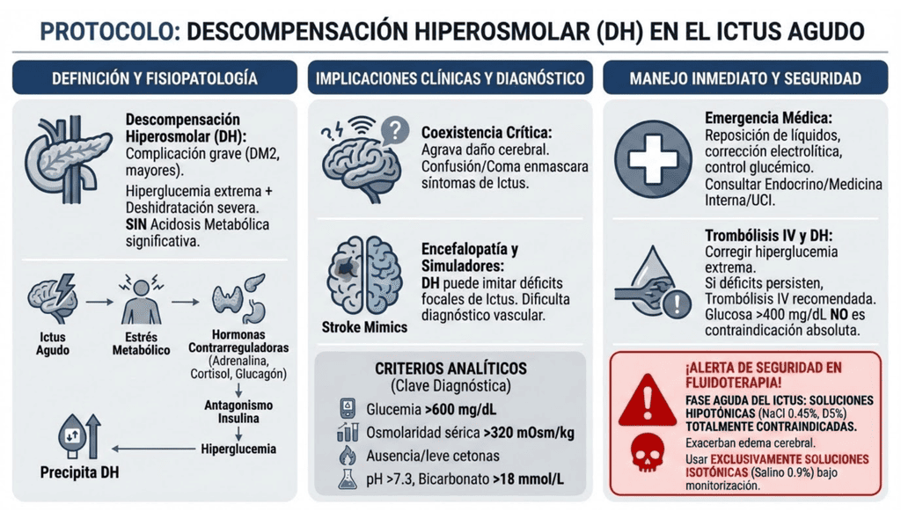

La descompensación hiperosmolar (DH) es una complicación grave de la diabetes, observada principalmente en personas mayores con diabetes tipo 2. Se caracteriza por una hiperglucemia extrema y una deshidratación severa, pero, a diferencia de la cetoacidosis diabética, sin acidosis metabólica significativa.
Un ictus agudo constituye un potente desencadenante de estrés metabólico. La liberación de hormonas contrarreguladoras (adrenalina, cortisol, glucagón) antagoniza el efecto de la insulina, elevando la glucemia y pudiendo precipitar una DH en pacientes diabéticos predispuestos.
Implicaciones clínicas
La coexistencia de un ictus y una DH es una situación crítica,
ya que puede agravar el daño cerebral y causar un
profundo estado de confusión o coma, que enmascara o
confunde los síntomas neurológicos del ictus, dificultando la
evaluación clínica.
- Encefalopatía y Simuladores de Ictus (Stroke Mimics): La DH causa un profundo estado de confusión o coma, pero también puede manifestarse con déficits neurológicos focales que imitan un ictus. Esto enmascara los síntomas reales del daño vascular, dificultando enormemente el diagnóstico y la evaluación clínica.
Diagnóstico y Criterios
La clave diagnóstica es la presencia de signos de deshidratación severa junto con datos analíticos característicos:
- Glucemia muy elevada (>600 mg/dL).
- Osmolaridad sérica >320 mOsm/kg.
- Ausencia o leve presencia de cetonas.
- Sin acidosis metabólica significativa (pH >7.3, bicarbonato >18 mmol/L).
Manejo Inmediato y Decisión de Reperfusión
Es una emergencia médica grave que requiere intervención médica inmediata. Se consultará para su evaluación y apoyo en su tratamiento con el Servicio de Endocrinología, Medicina Interna o Cuidados Intensivos. Además, en el paciente con ictus se deben aplicar estas reglas estrictas:
- Trombólisis Intravenosa y DH: Ante una hiperglucemia extrema que simula un ictus, se debe corregir rápidamente la glucemia. Si los déficits neurológicos discapacitantes persisten tras esta corrección inicial, se recomienda encarecidamente la administración de trombólisis intravenosa para mejorar el pronóstico funcional del ictus subyacente. Las cifras de glucosa >400 mg/dL no son contraindicación absoluta para la trombólisis.
- ¡Alerta de Seguridad en Fluidoterapia!: Aunque los protocolos convencionales de DH a veces recomiendan sueros hipotónicos (como cloruro de sodio al 0,45%) para corregir la hiperosmolaridad, en la fase aguda del ictus está totalmente contraindicado el uso de soluciones hipotónicas. El uso de solución salina al 0,45% o dextrosa al 5% exacerbará gravemente el edema cerebral isquémico. La reanimación inicial y de mantenimiento debe realizarse exclusivamente con soluciones isotónicas (suero salino al 0,9%) bajo monitorización hemodinámica estrecha.